FAT12 Floppy Images
Yamaha A-series floppy images handled by axklib use a FAT12 container and store Yamaha sampler object files in the FAT root directory. The FAT12 layer supplies file enumeration and cluster-chain reads. The embedded object payloads use the shared sampler object format described in Sampler Data Structures.

Container Detection
axklib treats .ima and .img files as FAT12 floppy candidates when they are
not SFS images and do not match another supported container. The FAT reader then
parses the boot sector. An image is rejected if the boot sector is too short or
contains invalid geometry such as zero bytes per sector, zero sectors per
cluster, or zero sectors per FAT.
A floppy image can contain FSFSDEV3SPLX object files without being an SFS
hard-disk image. Keep those layers separate.
Compatibility Profile
The reader supports the FAT12 profile used by maintained Yamaha A-series floppy media; it is not a general FAT implementation. It follows bounded FAT12 cluster chains, requires duplicated FAT copies to agree, and uses DOS 8.3 directory identities. Long-filename entries are ignored in favor of their 8.3 aliases. FAT16, FAT32, exFAT, filesystem repair, and filesystem alteration are unsupported.
Fresh image creation uses pinned FatFs code behind axklib's target-neutral object build plan. It is limited to a deterministic 1.44 MB superfloppy and root-directory object files. The generated image is reopened by this reader before publication. This profile has not yet been promoted by a physical Yamaha sampler test, so parser-valid output is not a hardware-compatibility claim.
FAT12 Geometry
Maintained 1.44 MB Yamaha floppies use the values in the Yamaha profile
column. axklib normalizes the pinned FatFs formatter output to that same media
descriptor and CHS profile before mounting and populating the image. The reader
still validates actual filesystem geometry rather than requiring one boot-sector
identity.
| Field | Boot offset | Size/type | Yamaha profile | Generated value |
|---|---|---|---|---|
| Bytes per sector | 0x0b |
u16le | 512 |
512 |
| Sectors per cluster | 0x0d |
u8 | 1 |
1 |
| Reserved sectors | 0x0e |
u16le | 1 |
1 |
| FAT count | 0x10 |
u8 | 2 |
2 |
| Root directory entries | 0x11 |
u16le | 224 |
224 |
| Total sectors, 16-bit | 0x13 |
u16le | 2880 |
2880 |
| Media descriptor | 0x15 |
u8 | 0xf0 |
0xf0 |
| Sectors per FAT | 0x16 |
u16le | 9 |
9 |
| Sectors per track | 0x18 |
u16le | 18 |
18 |
| Heads | 0x1a |
u16le | 2 |
2 |
| Hidden sectors | 0x1c |
u32le | 0 |
0 |
| Total sectors, 32-bit fallback | 0x20 |
u32le | 0 when 0x13 is used |
0 |
Derived offsets:
root_dir_sectors = ceil(root_entries * 32 / bytes_per_sector)
fat_offset = reserved_sectors * bytes_per_sector
root_offset = (reserved_sectors + fat_count * sectors_per_fat) * bytes_per_sector
data_offset = root_offset + root_dir_sectors * bytes_per_sector
cluster_size = bytes_per_sector * sectors_per_cluster
For the common 1.44 MB layout, data_offset is 0x4200.
The generated boot sector also has these deterministic fields:
| Offset | Size | Generated bytes/value |
|---|---|---|
0x00 |
3 | Boot jump eb 58 90. |
0x03 |
8 | OEM name WINIMAGE. |
0x24 |
1 | BIOS drive number 0x00. |
0x26 |
1 | Extended boot signature 0x29. |
0x27 |
4 | Volume serial 0x5c210b40, u32le. |
0x2b |
11 | Eleven spaces. No root-directory volume-label entry is generated. |
0x36 |
8 | Filesystem text FAT12 padded with spaces; FAT type still comes from cluster count. |
0x1fe |
2 | Signature 55 aa. |
Generated object directory entries use the archive attribute 0x20. Creation
and modification timestamps are fixed to 2026-01-01 00:00:00; last-access
dates are zero. This fixed metadata is a reproducibility convention, not a
sampler-facing object field.
The media descriptor is also written to byte zero of both FAT copies. This
keeps the BPB and FAT reserved entry consistent; changing only boot offset
0x15 would produce a superficially plausible but internally inconsistent
image.
FAT12 Entries
FAT12 stores 12-bit cluster-chain entries packed across bytes. axklib reads an
entry for cluster n with:
byte_index = fat_offset + n + n // 2
pair = image[byte_index] | (image[byte_index + 1] << 8)
value = pair >> 4 if n is odd
value = pair & 0x0fff if n is even
Cluster-chain traversal starts at the root directory entry's first cluster and continues while:
2 <= cluster < 0xff8
Values 0xff8..0xfff are treated as end-of-chain values. The reader tracks seen
clusters and reports a loop if the chain repeats a cluster.
Root Directory Entries
The root directory contains fixed 32-byte entries. axklib scans up to the boot
sector's root_entries count.
| Entry offset | Size | Meaning |
|---|---|---|
0x00 |
8 | DOS 8.3 stem, space-padded. |
0x08 |
3 | DOS 8.3 extension, space-padded. |
0x0b |
1 | Attribute byte. |
0x1a |
2 | First cluster, u16le. |
0x1c |
4 | File size in bytes, u32le. |
Entry handling:
| First byte / attribute | Reader behavior |
|---|---|
0x00 first byte |
End of used root directory entries. |
0xe5 first byte |
Deleted entry; skipped. |
Attribute 0x0f |
Long-file-name entry; skipped. |
Attribute with 0x08 set |
Volume-label entry; skipped. |
Attribute with 0x10 set |
Subdirectory; its FAT chain is checked and queued for bounded traversal. |
File size 0 |
Skipped by the current object reader. |
The reader starts with the fixed root directory and then traverses ordinary
subdirectories. . and .. entries are ignored. Cluster ownership is global:
a file or directory that reuses a cluster already claimed by another entry is
rejected as cross-linked. The current writer deliberately emits object files in
the root directory only.
DOS 8.3 Name Parsing
The filename is decoded as ASCII:
stem = entry[0:8].decode("ascii", replace).rstrip()
ext = entry[8:11].decode("ascii", replace).rstrip()
name = stem + "." + ext if ext else stem
Examples:
SINE____.003
SMP_2555.004
The FAT filename is placement metadata. The sampler-facing object name comes
from the embedded object header, not from the FAT filename. A numeric extension
such as .003 is not an object-type code. The authoritative type is the four
bytes after FSFSDEV3SPLX inside the file.
Yamaha Files In Existing Floppies
Supported Yamaha floppy images commonly contain these root-file classes:
| File class | Typical name | Contents and handling |
|---|---|---|
| Sampler object | SINE____.003, SMP_2555.004 |
Complete FSFSDEV3SPLX<type> payload. The embedded type and name are authoritative. |
| Symbol/support metadata | YAMAHA.SYM |
Non-object Yamaha support data. It is preserved by the source image but ignored by normal object inventory. |
| Model/system metadata | names such as A3000_SY.002 |
Non-object support data observed on some media. Its payload is not part of the public object decoder. |
| Other DOS file | any valid DOS 8.3 name | Readable through the FAT layer, but ignored by object inventory unless it begins with a supported object signature. |
Object stems often resemble an uppercase, DOS-compatible projection of the
embedded object name. Numeric extensions commonly reflect file placement or
save order. Neither convention is required for decoding, and neither replaces
the embedded header identity. There is no CD-style 0000 category catalog or
_DSKNAME group row on this floppy profile.
Known object tags and their inner byte layouts are documented in
Sampler Data Structures. In particular, SMPL waveform
payload boundaries come from the embedded big-endian header fields rather than
from filename or FAT allocation length.
Generated Floppy File Layout
axklib create floppy writes exactly one root-directory file for each prepared
Yamaha object. It does not create YAMAHA.SYM, model-specific system metadata,
subdirectories, a root-directory FAT volume-label entry, or long filenames.
Objects are sorted deterministically by object type, embedded name, and payload
size. Known types sort as SMPL, SBNK, SBAC, PROG, SEQU, then PRF3.
Each DOS filename is generated as follows:
stem:
scan the embedded object name from left to right
keep ASCII letters, digits, and underscore
uppercase retained characters
stop after 8 characters
use OBJECT if no character remains
extension:
one-based position in the complete sorted object list
formatted as three decimal digits: 001, 002, ... 224
If two stems collide, the later stem is shortened and its one-based global position is appended. If that still collides, image creation fails rather than silently replacing a file. The writer supports at most 224 objects because the fixed root directory has 224 entries.
For example, a freshly authored waveform and Sample Bank both named
Authored Tone are sorted as SMPL then SBNK and become:
AUTHORED.001 FSFSDEV3SPLXSMPL...
AUTHORE2.002 FSFSDEV3SPLXSBNK...
The filename algorithm is a generated-container convention. Transferring an existing object preserves every object payload byte but generates new DOS filenames; it does not preserve the source directory entry or cluster chain.
Reading File Bytes
A FAT file read is:
remaining = file_size
for cluster in cluster_chain:
offset = data_offset + (cluster - 2) * cluster_size
append image[offset : offset + min(cluster_size, remaining)]
remaining -= cluster_size
return first file_size bytes
The first byte of a Yamaha object payload is normally the first byte of the FAT file. axklib records both the FAT file's first cluster and the absolute object byte offset:
object_offset = data_offset + (first_cluster - 2) * cluster_size
If the shared object header reports an internal payload start, axklib also
records stored_payload_offset = object_offset + header_size.
Embedded Object Detection
A FAT file is handed to the sampler object decoder when its bytes start with:
FSFSDEV3SPLX<type>
Supported type tags are listed in Sampler Data Structures. The FAT reader attaches this placement metadata to each object:
| Metadata | Meaning |
|---|---|
fat_file |
Slash-separated DOS 8.3 logical path. Root files contain only the filename. |
fat_directory_offset |
Absolute byte offset of the file's directory entry, whether in the fixed root or a subdirectory cluster. |
fat_first_cluster |
First cluster from the root directory entry. |
fat_cluster_count |
Number of clusters followed by the chain. |
fat_file_size |
File size from the root directory entry. |
fat_object_offset |
Absolute byte offset of the object file start. |
fat_stored_payload_offset |
Object offset plus shared header size when known. |
The object key is based on the FAT logical path. The scope key is the FAT root;
subdirectory components remain part of the object key and fat_file metadata.
Validation And Diagnostics
FAT12 diagnostics are split into container and sampler-data problems.
| Condition | Report shape |
|---|---|
| Boot sector too short | Unsupported FAT/floppy container. |
| Invalid geometry | Unsupported FAT/floppy container. |
| Repeated cluster in a chain | FAT chain loop error for the affected file. |
| File does not start with object magic | Ignored by object scan. |
| Unsupported object type tag | Ignored by normal object loader or surfaced as unsupported in lower-level reports. |
| Sampler object decode issue | Reported by object, relationship, validation, or export commands. |
Minimal Read Walkthrough
- Read the first 512 bytes and parse the FAT geometry fields.
- Compute FAT, root-directory, and data-area offsets.
- Iterate fixed 32-byte root directory entries.
- Skip deleted, empty, label, and long-name entries; traverse bounded subdirectories.
- Decode the DOS 8.3 filename, first cluster, and file size.
- Follow the FAT12 cluster chain and reassemble the file bytes.
- Select files beginning with
FSFSDEV3SPLX. - Decode the shared object header and attach FAT placement metadata.
- Pass the object payload to the shared sampler-data decoder.